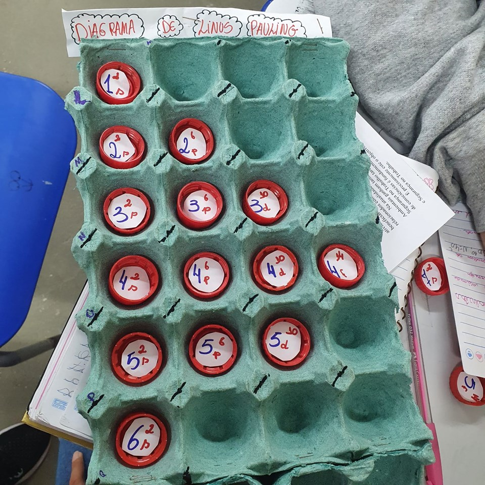
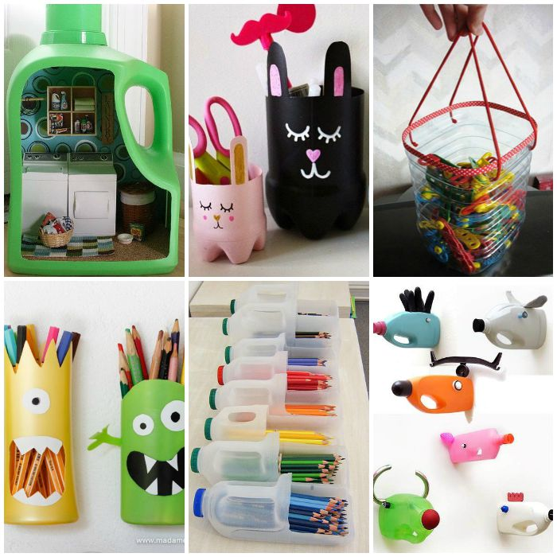
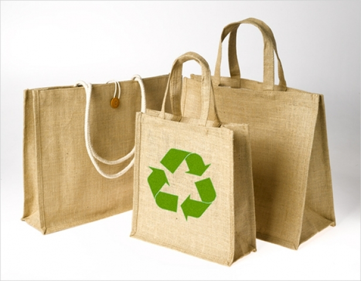
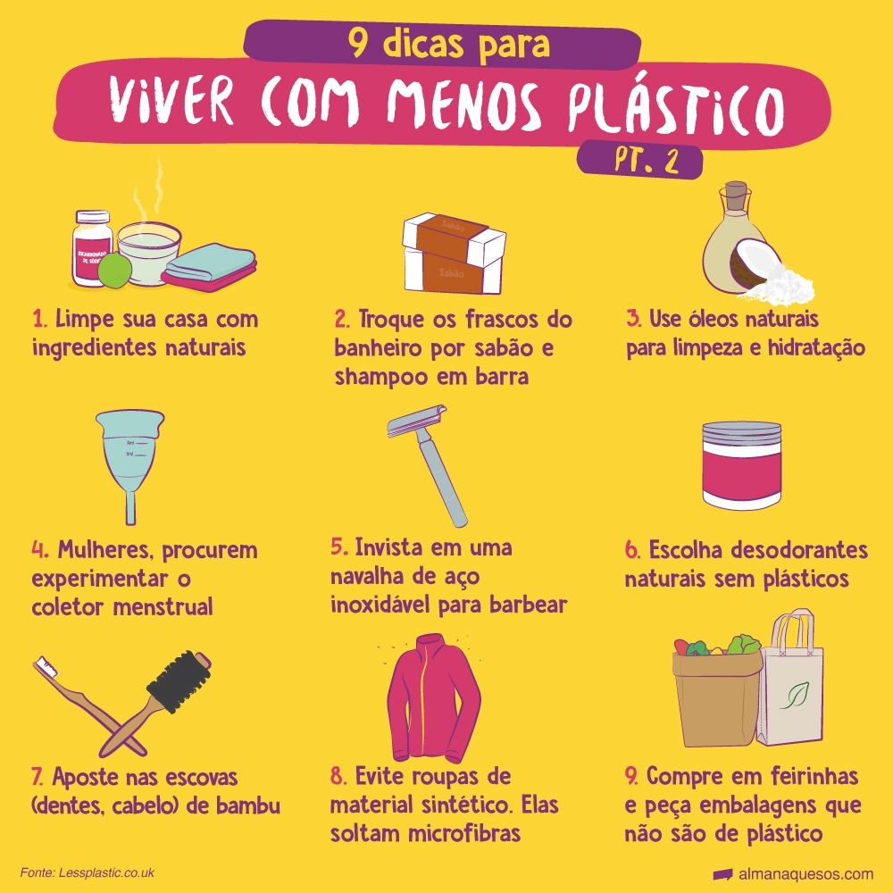

Informe-se sobre Centros de Reciclagem
Descubra onde estão localizados os centros de reciclagem mais próximos e quais materiais eles aceitam.
A reciclagem, redução e reutilização do plástico são essenciais para proteger a vida marinha. O descarte inadequado de plásticos nos oceanos leva à poluição, afetando peixes, aves e mamíferos que frequentemente confundem esses resíduos com alimento, resultando em sérios danos à saúde e morte. Reduzir o consumo de plástico, optando por produtos com menos embalagens e evitando itens descartáveis, diminui a quantidade de lixo produzido. Reutilizar plásticos prolonga a vida útil desses materiais, evitando que se tornem resíduos rapidamente. A reciclagem transforma plásticos descartados em novos produtos, fechando o ciclo de uso e reduzindo a demanda por matéria-prima virgem. Essas práticas não só preservam a biodiversidade marinha, mas também garantem um ambiente mais saudável para as futuras gerações. Cada gesto consciente contribui para um futuro sustentável e a proteção dos nossos oceanos.
Descubra onde estão localizados os centros de reciclagem mais próximos e quais materiais eles aceitam.

Antes de reciclar, é importante separar os plásticos dos outros tipos de lixo e limpá-los.

Corte garrafas plásticas ao meio e use a parte inferior como vaso para plantas.

Verifique os símbolos de reciclagem nos produtos plásticos, que indicam o tipo de plástico.

Utilize plásticos para criar materiais educativos e brinquedos para crianças.

Em vez de descartar embalagens plásticas, reutilize-as para organizar e armazenar itens em casa.

Substitua sacolas plásticas por sacolas reutilizáveis ao fazer compras.

Prefira produtos com embalagens mínimas ou alternativas de embalagem sustentável.
Al. Franca, 1228 - Jardins - São Paulo
A. Jaú, 1725 - Jardim Paulista - São Paulo
Al. Lorena, 1488 - Jardim Paulista - São Paulo
Av. Paulista, 1008 - Bela Vista - São Paulo
Av. Angélica, 2091 - Santa Cecília - São Paulo
Av. Paulista, 1119 - Cerqueira César - São Paulo
Av. Paulista, 1230 - Bela Vista - São Paulo
Av. Paulista, 1853 - Bela Vista - São Paulo
Av. Paulista, 2073 - Cerqueira César - São Paulo
Av. Paulista, 995 - Bela Vista - São Paulo
Av. Paulista, 2064 - Bela Vista - São Paulo
Av. Paulista, 807 - Bela Vista - São Paulo